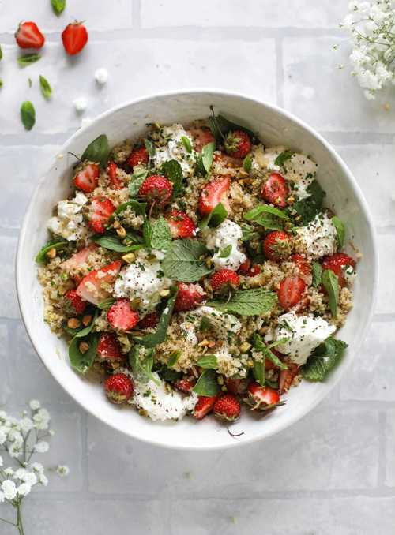

Салаты
Салат с киноа

Киноа, как крупа, мне давно полюбилась, бояться ее не стоит, очень проста в приготовлении. Очень много применений: салат, основное блюдо, к примеру «плов», в составе хлеба, а ещё можно приготовить икру! А приобрести киноа можно и в крупных супермаркетах, и в моих любимых магазинах с экопродуктами. Поделюсь интересным рецептом салата:
Читать далее
Классический завтрак на новый лад: 6 интересных рецептов овсяной каши

С карамелизированными бананами, с миндальной пастой, ванильная, со вкусом морковного торта, с корицей и шоколадом и с кардамоном, или подборка 6 интересных рецептов овсянки для тех, кому наскучили классические завтраки.
Рецепт «тарталеток» из гранолы с йогуртом и свежими ягодами
«Тарталетки» из гранолы с йогуртом и свежими ягодами — это упрощенная версия классического завтрака, который стал любимчиком у многих адептов здорового питания. Рецепт крайне прост и не займет больше получаса, что чрезвычайно удобно для готовки по утрам. Плюс тарталетки можно взять с собой: перекусить в пути или в качестве снэка.
Cheese appetizers: легкие рецепты закусок с сыром
Судя по всему, осень решила заскочить к нам пораньше. За окном дожди, пасмурно и немного тепло, словно лето на последнем издыхании. Но это не повод для грусти. Наоборот, сейчас как никогда лучше перенести прогулки и посиделки на верандах в стены вашего уютного дома. Для таких случаев идеально подойдут приятные закуски, где основной ингредиент — сыр. Во-первых, блюда легко и быстро готовятся, а во-вторых, никого не оставят равнодушными. Идеальное комбо!
Cozy summer days at home: медовые капкейки с ромашковым кремом
Эти выходные хочется провести дома. Чтобы за окном пасмурно, а вокруг уют и тепло. Никуда не торопиться и заниматься делами, которые приносят удовольствие и успокоение. И если вы любите готовить, то вот рецепт медовых капкейков с ромашковым кремом. Готовка не займет у вас много времени, но зато можно чуть больше потратить на украшение и сервировку.
Паста на ужин: 5 быстрых рецептов

М-м-м, ароматная паста! Что может быть лучше такого простого и при этом невероятно вкусного блюда? Ниже — 5 рецептов, готовка которых не займет у вас больше часа, что идеально для импровизированного романтического ужина в эти выходные. Buon appetito!
Лето на тарелке: 3 рецепта полезных салатов 
Раз уж лета за окном в ближайшее время нам не видать, пусть хоть что-то яркое и солнечное будет на тарелке. Сегодня делимся тремя рецептами салатов, которые скрасят пасмурные дни.
Фотогеничный завтрак: японские панкейки-суфле
Примерно месяц назад в нашем Instagram мы выложили фотографию с невероятно аппетитным завтраком / десертом, и эта публикация собрала кучу восторженных комментариев, половина из которых — «что это такое» и «где такое можно попробовать». Как оказалось, это были японские панкейки-суфле, которые очень легко приготовить дома, если у вас есть миксер. Поэтому сегодня — рецепт воздушного и невероятно фотогеничного завтрака.